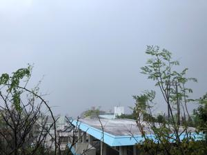
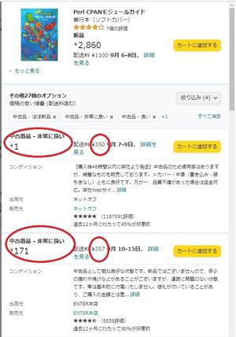

うるがいの話 ある日
最新: １円の中古本【うるがいの話 ある日】とは 一日だけのプログです
『うるがいの話』の最新一日だけのプログで、通信料が少なく経済的だ。カニの画像をクリックすると全ての日付が載る『うるがいの話』サイトを表示します
|
|
【うるがいの話】 うるがい(ｳﾙｶﾞｲ urugai)とは、『もずくがに』の名前でとても大きくなります。 |
|---|---|
|
|
【カミマヤーの話】 猫のことを方言でマヤーといいます。カミマヤー（kamimayaa）とは、神の猫のことです。 |
|
【たながぁの音楽】 たながぁ（ﾀﾅｶﾞｰ tanagaa）とは手長えびのことで、何種類かあり大きいのは車 エビぐらいになります。 |

|
【ぶながぁの話】 ぶながぁ(ﾌﾞﾅｶﾞｰ bunagaa)とは、赤い髪の毛、赤い身体、そして身長は１ｍ２０ｃｍ ぐらい、川の蟹を食べているの目撃された。場所は沖縄県国頭郡大宜味村のと ある村僕の隣近所に住んでいる爺さんから、聞いた話です。 |
|
|
【ギーマの話】 ギーマ(giima)とは、山原の里山に咲くスズランに似た、 花を付けます。実は食べられます、 気が付くと口の周りが紫になっています。 |
2022年09月04日 (日）１円の中古本
16:34
 
Ａｍａｚｏｎで注文していた１円の中古本が届いた。たまに１円を目にするが
なにかあるそうで、これまでは購入しなかったもののコンディションが、非常
に良いというので試してみた。届いた本は、ほとんど新品である、ホー。とこ
ろで１円で稼げるのか、調べてみた。『無料で仕入れたものを１円出品する場
合、送料が２３６円以上（費用の内訳としては、カテゴリー成約料が８０円、
梱包費用が６円、ゆうメールでの送料がおおよそ１８０円と見積もりった場合
）であれば利益が発生する計算になります』、ふむ今回は送料が３５０円なの
で１１４円の利益になる。ほうー、なお、新品だと２，８６０円である。１円
もありと学習した。
台風１１号は今が、最接近だが風はあまり強くない、それでもガラス越しに庭
を眺めていたヨメが、ハイビスカスの鉢が倒れそうになっているケド！と言わ
れ、さっさと庭に出てヒモで倒れないように補強した。雨が、降っていない時
間帯なので出来たが、昨日のような大雨だと出来なかった。
１６時２３分 ビットコインの総資産 ￥８、００９↓